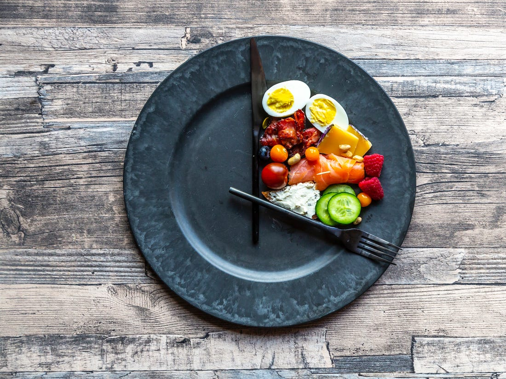
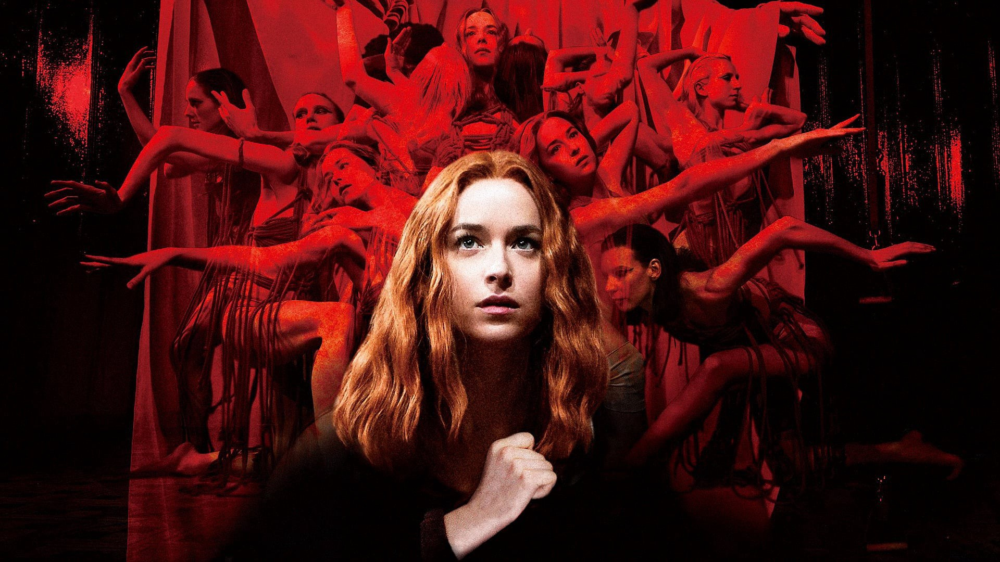
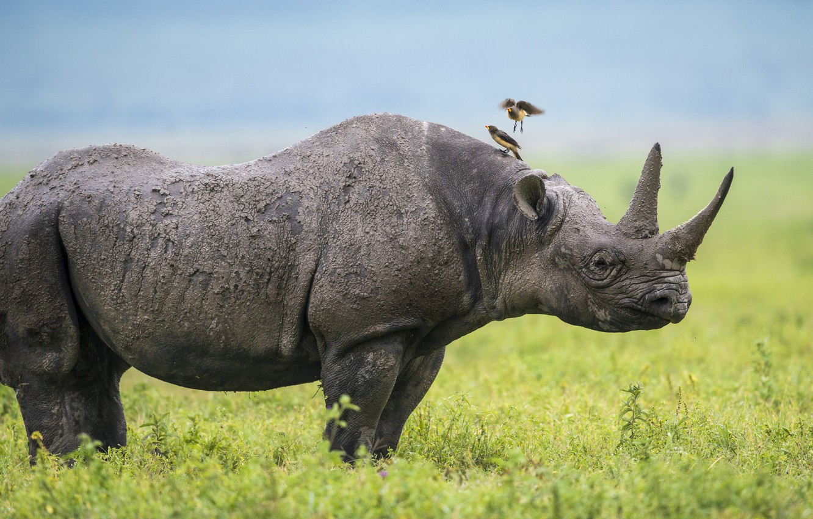

What Nine Days Of Fasting Does To Your Body And Brain
BY TOM PARKER BOWLES 09/09/2019
It seemed like a good idea at the time. Like most things do, in the soft, dying light of an epic Friday lunch,
fuelled by boozy optimism and three-bottle bravado. “I heard about this place,” I say to the editor,
“a health clinic in Germany, where you go without food for days on end. Weeks even. You know, Jesus and his jaunt to the desert. And Gandhi.
A physical form of prayer. Brings you closer to God and all that.”
He raises an eyebrow and takes another glug of wine: “And what, may I ask, has increased spiritual awareness through physical deprivation got to do with you?”
Good point. But like a slack-bellied Bear Grylls, I’ve come prepared. “Well, you know me, your indolent, sybaritic,
exercise-averse food editor who makes those Lotus Eaters look like the Temperance League on starvation Sunday.” He nods.
“And you know how I hate all that New Age bullshit about wellness; and those homeopathic quacks,
and the bastard snake oil salesmen sugar-coating dodgy diets and miracle cures in a shiny glaze of quasi-scientific claptrap.” He nods again, and rolls his eyes...
'Suspiria' Director Luca Guadagnino On His Ultra-Gory Italian Horror Film
BY JOHNNY DAVIS 24/09/2018
Luca Guadagnino once called himself a frustrated interior designer. “Hmm,” he says. “But I am not frustrated any more.” This is obvious the minute you walk into his Milan apartment. Architectural renderings are stuck above his work desk. The bookshelves next to his coffee table display 12 rows of tile samples: stone, marble and wood in various shades of grey, black and brown. Elsewhere there are tacked-up mood boards (Sixties Bob Dylan; Ringo Starr on timpani at Abbey Road; lots of modernist chairs; a page of fireplaces). On his coffee table sits the new issue of World of Interiors alongside Walled Gardens by Jules Hudson and Rose by Ellen Willmott, the latter book comprised of watercolours of flowers printed on high-spec matt paper. By the sofa there are catalogues for Bellora, the Italian linen and luxury bedding company; Flos, the lighting people; and Farrow & Ball.
Bird alarm calls help rhinos avoid people—and possibly poachers
BY DOUGLAS MAIN 09/04/2020
In sub-saharan Africa, red-billed oxpeckers feed on the parasites of rhinos and more than 20 other species of mammal. Now, new research suggests the birds may also serve as sentinels that help rhinos avoid humans—and potentially poachers. Though black rhinos have a good sense of smell and good hearing, they have notoriously bad vision. If you know where one is and stay downwind of it, you can often get quite close to the animal, says Roan Plotz, now a researcher at Victoria University in Melbourne, Australia. While Plotz was completing his doctoral thesis on black rhinos in Hluhluwe-Imfolozi Park, in eastern South Africa, he began contemplating how black rhinos might avoid humans. In recent years, poachers have decimated the ranks of the black rhino, which in adulthood can weigh a ton and a half. Today, the critically endangered species’ population is a little over 5,000, a tenfold decline since the 1970s.
'It has become our sanctuary': The calming power of nature in a pandemic
BY RACHEL HARTIGAN SHEA 09/04/2020

The COVID-19 pandemic may have shut down much of the human-controlled part of the world but, thankfully, nature hasn’t gotten the message. Birds still chirp, flowers burst into bloom, breezes sway the trees, and people drink in as much of the outdoors as their local rules allow. The streets are empty, but the parks—where they’re open—are crowded. Photographers, largely confined to their homes like everyone else, capture this yearning for nature. In Kuala Lumpur, a photographer pines for the lush tropical life beyond his windowpane. In Topanga, California, a family saves their walks for dusk, when all the neighbors have gone inside. In Amman, Jordan, a photographer looks for solace in the sky; in Istanbul, another discovers it in the water. And a young boy in a Johannesburg township finds beauty in the wildflowers along a barbed wire fence. How do we experience nature when our access to it becomes limited? National Geographic and Magnum Photos photographers bring you a global look at how coronavirus is affecting the worlds they see inside—and just outside—their windows. (See how they captured families adapting to a world changed by coronavirus.)